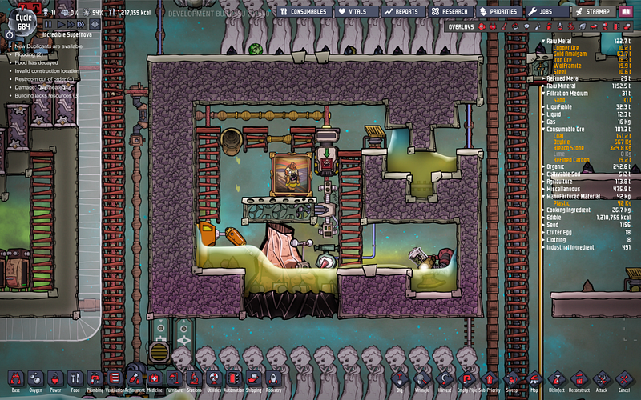
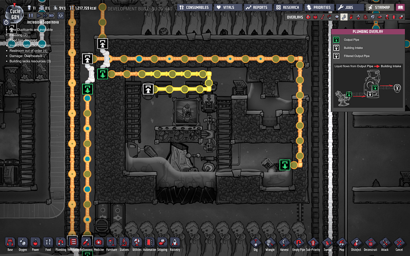
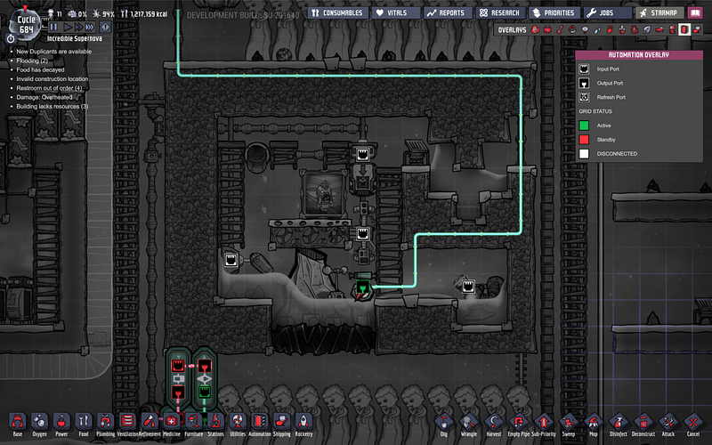
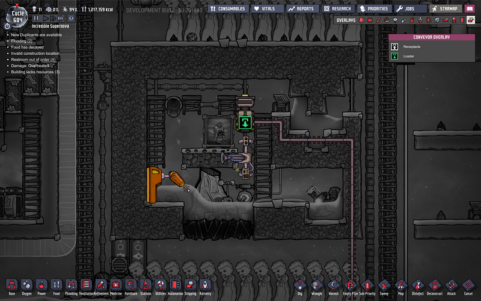

自動化された金属火山の一例
自動化された金属火山の一例
金属火山から出てくる金属を自動的に冷却・採掘するためのシステム。大分前に作ったヤツなんだけど、「前見せてもらったあれ、うろ覚えで思い出せない」って言われてたので、エントリにまとめてみた。
概要はこんな感じ。

入り口は液体ロック。水蒸気が逃げ出してほしくない。
大枠としては、別システムから流入する汚染水をぶっかけて冷却している。ただ、汚染水で冷却すると泥が作られるので、それをどうにかしないといけないのと、水蒸気として水かさが減っていくのでそのあたりを水圧センサーとポンプで制御してる。

配管はこんな感じ。左上から汚染水が降りてくる。
この汚染水でついでに水蒸気を冷却して液体化するのにつかう。なので配管は熱伝導率の高いものを使う。
火山全体が水に浸かると火山活動がとまったりするので、下1マスだけが必ず水につかるようにしてる。冷やすまでは火山から排出された金属は溶けた状態なので、固体に凝固させるために水につけてる。
オーバーフローする分は右側のポンプで排水。この排水は熱いので、必ず浄水器を通して熱を40℃まで下げること。

水圧センサーは大元の汚染水の供給をコントロールするために遮断機とリンクしてる。
もうひとつのキモはこちらの自動採掘機と掃除機。

採掘機は火山の前に溜まっていく土を崩してくれる。
掃除機は溜まっていく金属をてきぱきとストレージに送ってくれる。ただ、この金属は温度が高めなので、この掃除機は鋼鉄のような物で作らないとすぐ壊れる。
ざっくりこんな感じ！